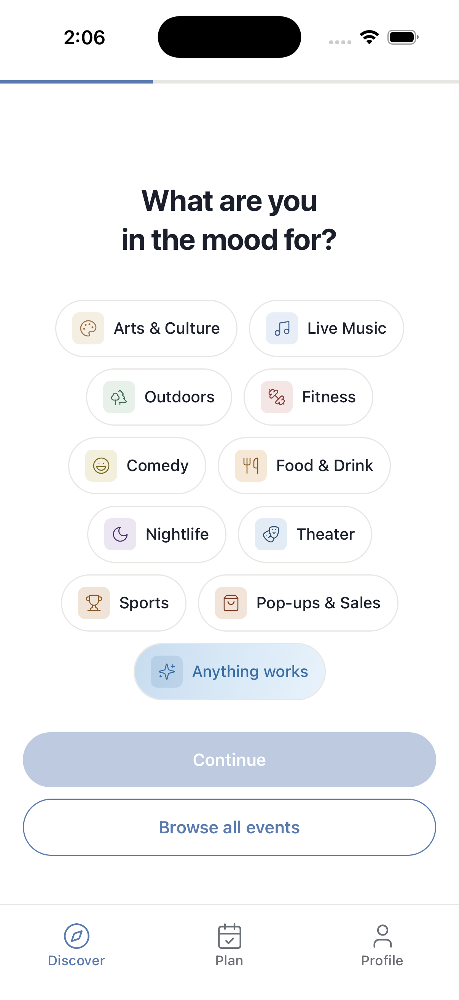
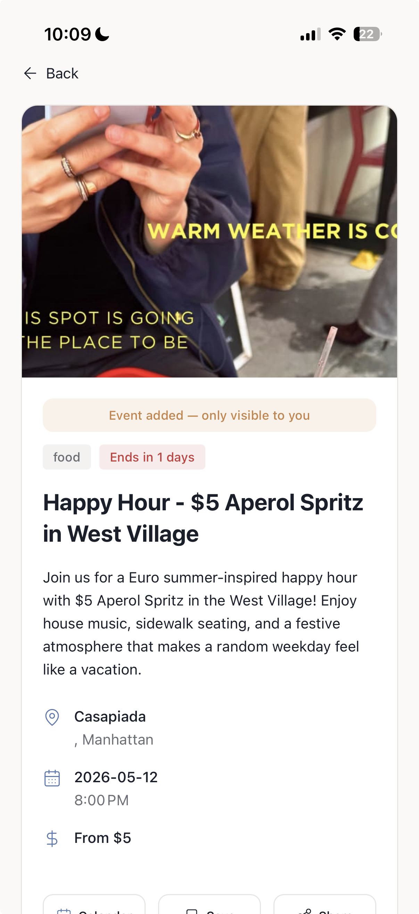
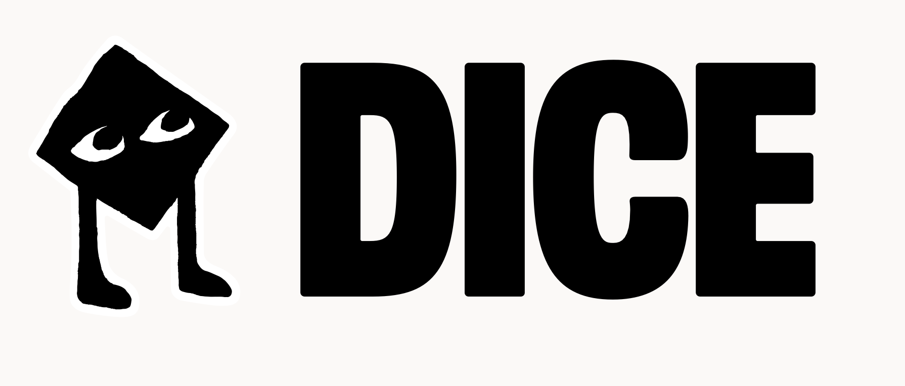
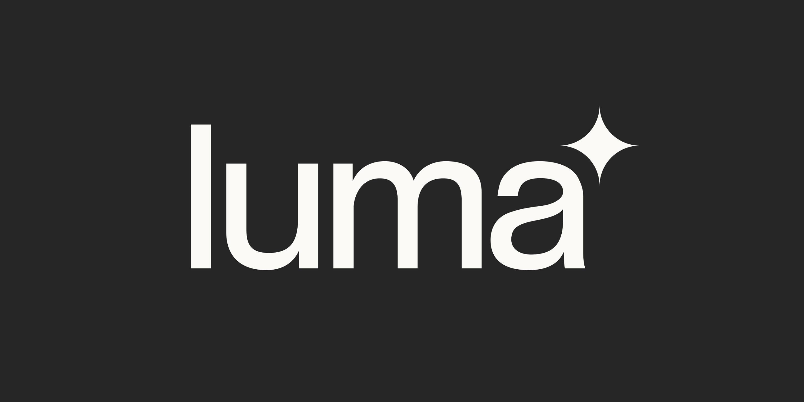
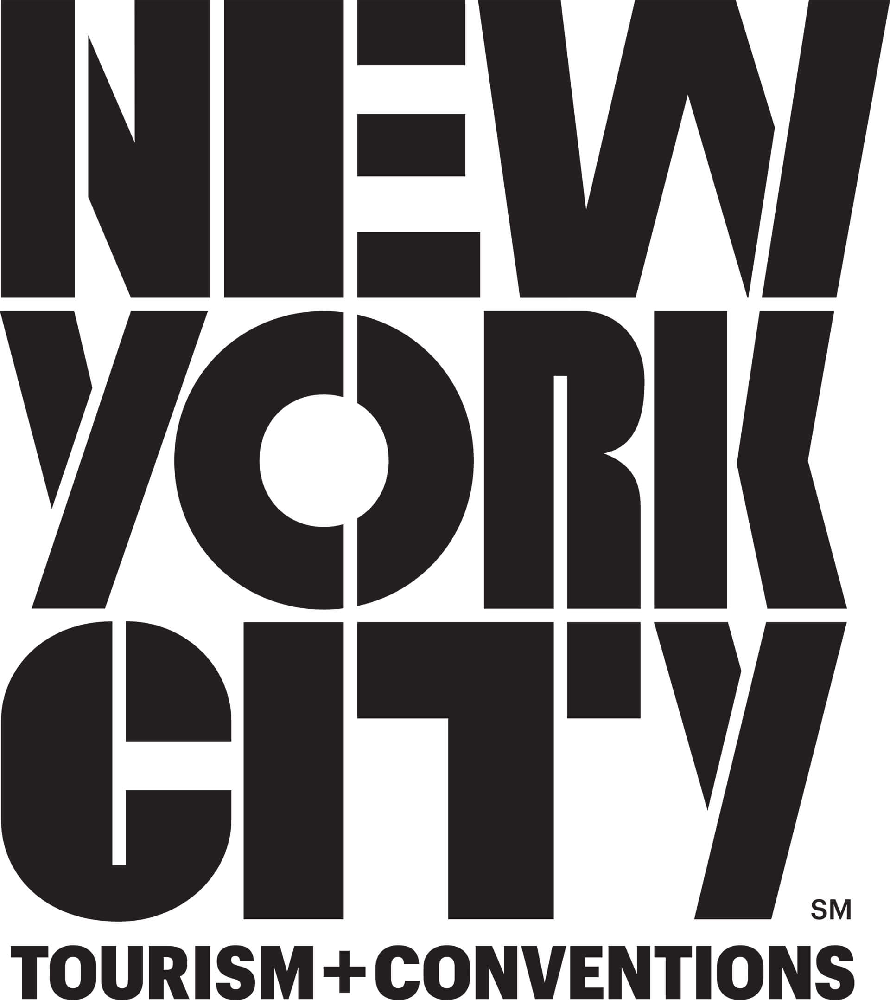

NYC events, sifted just for you.
A taste-first event app for young New Yorkers. Live in NYC. Already learning.
01 · Executive summary
Sift is a taste-first event app for young NYC. Already shipping, already learning.
Across 20 user interviews, the recurring theme: "I don't want another social media app. I just want to know what's good this weekend."
Sift curates with AI plus an editor (rejecting 85% of incoming inventory), users swipe one card at a time, and the deck re-ranks in real time. Taste, swipe, plan.
21 organic downloads, 30 signups, 21 actively engaged, 69 on the waitlist. ~2.6× Apple's typical product-page benchmark with no paid acquisition. Catalog refreshed every 3 days from 6 live sources.
Funds iOS and Android launch, push-notification engine, and the curator/creator partnerships that drive growth. $345M ARR opportunity in NYC alone.
02 · The change
NYC's event industry is enormous and the discovery problem is unsolved. The first taste graph for events wins the city, and the category.
03 · The problem
NYC has infinite events. Nothing is actually personalized.
"We spend most of our time looking into activities we end up not even going to. We just get overwhelmed and give up."
— Sam, 23. One of 20 user interviews."Honestly? I don't want another social media app. I just want to know what's good this weekend."
— Recurring theme across 20 interviews.04 · Why now
The conditions for a taste graph just landed. The window is open today.
A taste graph is a model that learns what you like from how you react. Spotify, Beli, and TikTok proved the pattern. Three shifts converge in 2026; none existed five years ago, and the incumbents haven't responded.
AI curation got cheap
An LLM rubric that scores 1,000 events for audience fit costs <$5/wk. The same job needed a five-person editorial team in 2020. We have it running today.
Swipe-to-rate trained a generation
Beli, Spotify, and TikTok proved the model. Events haven't caught up.
Aggregators are stale
Eventbrite hasn't shipped a meaningful UX change in 5 years. Editorial sites still publish by hand. None personalize. The window is open now.
05 · The solution
Sift curates. You swipe. It learns.
Every swipe re-ranks your deck in real time.
Discover
One curated card at a time. The deck is shaped by your taste, not who you follow.
Learn
Three intents per swipe. Right is going, left is not now, down is not interested. Each one teaches a different signal. Re-rank in real time.
Import
Paste an Instagram or TikTok link, or share-sheet directly into Sift. AI extracts the event and adds it to the catalog. Users feed the moat.
Plan
Save, sequence the night, one tap to Apple or Google Calendar. From swipe to "added to my Saturday" in under 30 seconds.
06 · Inside the app
Open it. Tune it. Swipe. Import.




07 · The product
We're already pulling NYC's catalog in real time.

Dice
Luma Fever
Fever
NYC Museums Eventbrite
EventbriteSix live scrapers ingest every 3 days. AI rejects tourist traps, corporate spam, and kids events. The keep-pile gets vibe-scored 1–10 by an LLM rubric. Sub-5 never loads in the feed.
08 · How the taste graph works
Curate hard. Score every signal. Every swipe re-ranks the deck.
Six live sources. Refreshed every 3 days.
- AI ingest from Dice, Resident Advisor, Luma, Fever, NYC museums, Eventbrite.
- Claude Sonnet 4.6 with web search finds what the scrapers miss. Pop-ups. Sample sales. Openings.
- Editor signs off on the keep-pile. Eventbrite needs the firehose. We don't.
An LLM scores audience fit. The cut is automated.
- Vibe 1–10 by gpt-4o-mini. Sub-5 never loads.
- Category re-classified at >0.8 confidence. Sample sales don't get filed under nightlife.
- Tags, venue, price band, geography all scored per event.
Every swipe re-ranks the deck.
- Three intents. Right is going. Left is not now. Down is not interested.
- Four signals update per swipe. Category, tag, borough, price.
- Re-rank in <200ms. Cold-start blends quality+timing for ~20 swipes, then fully personalizes.
- Permanent hide after 3 hard passes. See next slide for the full loop.
09 · Learns your taste at every swipe
Three intents. Four signals.
+0.08 each tag
+0.06 borough
Re-surfaces in 2–5 days.
3 strikes = permanent hide.
Just inspect the card.
- Music+0.15
- jazz+0.08
- intimate+0.08
- Manhattan+0.06
10 · Competition & status quo
Taste. Taste. Taste.
We're the only taste play.
11 · Traction
18.3% App Store conversion. Zero spend. Zero paid acquisition.
Apple's typical product-page conversion is ~5–7%. Sift converts at ~2.6× the benchmark with no paid acquisition. 3,544 tracked engagement events, 30 signups, 21 actively engaged, 69 on the waitlist.
- Catalog cadence sped up. Weekly refresh became every 3 days. More fresh inventory, less stale recs.
- iOS share extension live. Sift sits in every NYC user's IG and TikTok share sheet. Distribution wedge that incumbents don't have.
12 · Business model
Two lanes. Both compound on top of the taste graph.
Affiliate fees
5–15% per ticket and reservation routed through Sift. Dice and Eventbrite are already in the catalog as scrapers. Affiliate revenue activates when we wire Resy and Ticketmaster. Zero ad inventory. Paid only on conversion.
Sponsored placements & curation
Brands, venues, and editorial partners pay to run native lists inside the right curated decks. Eater, Infatuation, and top NYC creators are the partnership target once user base passes 10K. Native, not banner.
Taste graph compounds → placements get more valuable → partners pay more.
13 · Market size · bottom-up
$345M ARR in NYC. $1.4B+ across the top 5 metros.
- NYC$345M
- LA$290M
- Chicago$180M
- Miami$150M
- SF Bay$200M
- Top-5 ARR~$1.4B+
Top-5 figures are next-step expansion estimates, not committed plan. NYC is the wedge.
14 · Go-to-market
Three phases. Each one earns the right to the next.
Win NYC core
- Friends-of-friends and creator seeding (Tier-2 NYC TikTok).
- Curator partnership outreach: Eater and Infatuation lists inside the app.
- Referral loop: invite a friend, both unlock a list.
- Press: NY Mag, The Cut, Brooklyn Mag launch coverage.
Scale NYC, scope city #2
- Push-notification engine: weekend pickups and drop alerts.
- Affiliate revenue turns on (Resy and Ticketmaster live).
- Paid social only after creator content proves LTV/CAC > 3.
- Second-city playbook scoped, editorial lead recruited in parallel. LA is the lead candidate.
Own NYC, launch city #2, sequence cities 3–5
- NYC fully owned: 250K MAU, deep editorial moat.
- City #2 (LA) goes live once NYC unit economics hit target.
- Cities 3–5 (Chicago, Miami, SF Bay) sequenced at six-month intervals.
- Sponsored placements compounding. Affiliate revenue scaling on Resy and Ticketmaster.
15 · 18-month roadmap
Quarter-by-quarter plan. Funded entirely by this round.
App Store live + polish
- iOS shipped, share extension live
- Three-intent swipe + social import
- Catalog refresh every 3 days
- 30 signups · 21 active → 1K NYC users
Android, revenue, scout city #2
- Android app launch
- Resy and Ticketmaster affiliate fees live
- Hire NYC editorial + growth lead
- Second-city scouting begins (LA shortlist).
- 1K → 10K NYC users
NYC depth, recruit city #2 lead
- First sponsored curator placements live
- Editorial partnerships deepen with Eater + Infatuation
- Second-city editorial lead recruited.
- 10K → 75K NYC users, $40K MRR
Own NYC, ship city #2, Series A
- NYC dominance, sponsored revenue compounding
- City #2 goes live; cities 3–5 sequenced.
- $4M ARR run-rate, A-ready metrics
- Series A target: $5–8M to fund cities 3–5
16 · Risks & mitigations
What could break this, and exactly what we do about it.
Cold-start beyond friends-of-friends.
Every event app that's tried social has died bootstrapping the network. Paid acquisition without payback kills runway.
Creator + curator seeding, not paid social.
Eater and Infatuation curate inside the app; their audience is already ours. Referral unlocks lists. Paid social only after LTV/CAC > 3 on validated creator content.
Hand-curation doesn't scale to 5 cities.
The 85% reject rate depends on a human reviewer. Hiring 5 editorial leads is slow and expensive.
One editorial lead per city. Same playbook.
The AI rubric does 90% of the cut; the human reviews the keep-pile (~30 min/wk). One lead per city is the model. City-agnostic rubric is the moat.
Eventbrite or TikTok ships a "for you" feed.
If a giant copies the loop, our window closes.
Their model can't reject the firehose.
Eventbrite's economics need 100% inventory live. TikTok ranks creators, not events. The taste graph compounds; by month 6 the model is the moat.
17 · Team
Builders who live the problem. Target demographic, in the product daily.
Four builders who live the problem, in the product daily. This round buys focused product velocity: Android launch, sponsored placement infrastructure, and the curator/creator partnerships that drive growth.
Yi-Jie Cheng
Jary Tolentino
Irene Nam
Jerry Gu
18 · Use of funds
$750K SAFE. 18 months runway. Every dollar is line-itemed.
What this round buys
- NYC: 41 today → 75K MAU.
- Android shipped Q3 2026. iOS already live.
- Affiliate revenue compounding with Resy + Ticketmaster.
- Sponsored placements live with NYC editorial partners.
- Social-import distribution wedge scaled. IG + TikTok share extension.
- City #2 editorial lead hired and playbook scoped.
- $40K MRR run-rate. A-round-ready metrics by Q2 2027.
$750K to make NYC unmissable.
$750K SAFE · 18 months runway · funds iOS and Android launch, push-notification engine, sponsored placement infrastructure, and owning NYC end-to-end before any second city.
NYC's event industry is enormous and the discovery problem is unsolved. Sift makes sure you actually go to the right ones, and is the first taste graph for events.
Thank you · questions?